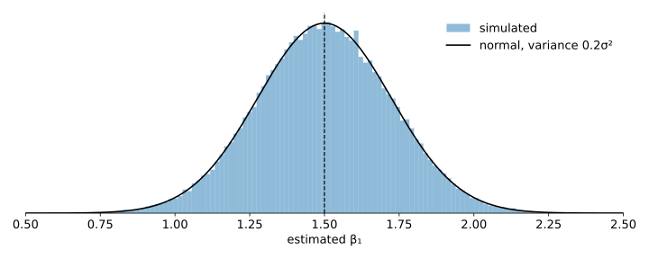

Articles · Econometrics
The Gauss-Markov Theorem: OLS by Hand
The Gauss-Markov theorem states that, under five assumptions, the OLS estimator is the best linear unbiased estimator (BLUE). This article works through the theorem on a dataset of four observations, small enough to compute every quantity by hand: for each assumption, it shows where it enters the calculation and what it delivers.
All computations use NumPy only, including the inverse of \(\mathbf X'\mathbf X\).
The Gauss-Markov assumptions
- Linear in parameters: \(y = \beta_0 + \beta_1 x_1 + \dots + \beta_k x_k + u\).
- Random sampling: \(\{(x_{i1},\dots,x_{ik},y_i)\}_{i=1}^n\) drawn from the population model.
- No perfect collinearity.
- Zero conditional mean: \(\mathbb E[u \mid x_1,\dots,x_k] = 0\).
- Homoskedasticity: \(\mathrm{Var}(u \mid x_1,\dots,x_k) = \sigma^2\).
Assumptions 1–4 make OLS unbiased; assumption 5 gives its variance formula and makes it the best among linear unbiased estimators.
A numerical example
The model is \(y = \beta_0 + \beta_1 x_1 + \beta_2 x_2 + u\), with \(n = 4\) observations and \(k = 2\) regressors:
| \(i\) | \(y_i\) | \(x_{i1}\) | \(x_{i2}\) |
|---|---|---|---|
| 1 | 2 | 1 | 0 |
| 2 | 5 | 2 | 1 |
| 3 | 6 | 3 | 1 |
| 4 | 7 | 4 | 0 |
\(\beta_0, \beta_1, \beta_2\) are the true population values: fixed and unknown. \(\hat\beta_0, \hat\beta_1, \hat\beta_2\) are their estimates, computed from the sample. The matrix of regressors \(\mathbf X\) has a column of ones for the intercept:
import numpy as np
np.set_printoptions(precision=4, suppress=True)
y = np.array([2.0, 5.0, 6.0, 7.0])
x1 = np.array([1.0, 2.0, 3.0, 4.0])
x2 = np.array([0.0, 1.0, 1.0, 0.0])
X = np.column_stack([np.ones(4), x1, x2]) # constant, x1, x2
n, k = X.shape[0], X.shape[1] - 1
print(X)[[1. 1. 0.] [1. 2. 1.] [1. 3. 1.] [1. 4. 0.]]
Assumptions 1 and 2
1. Linear in parameters. The model holds for every observation:
$$\begin{aligned} 2 &= \beta_0 + 1\,\beta_1 + 0\,\beta_2 + u_1 \\ 5 &= \beta_0 + 2\,\beta_1 + 1\,\beta_2 + u_2 \\ 6 &= \beta_0 + 3\,\beta_1 + 1\,\beta_2 + u_3 \\ 7 &= \beta_0 + 4\,\beta_1 + 0\,\beta_2 + u_4 \end{aligned}$$Each \(\beta\) multiplies a known number. In matrix form, \(\mathbf y = \mathbf X\boldsymbol\beta + \mathbf u\).
2. Random sampling. The four rows are independent draws from the population, so \(u_1, \dots, u_4\) are independent of each other.
Assumption 3
3. No perfect collinearity. OLS requires the inverse of \(\mathbf X'\mathbf X\), which exists only if its determinant is not zero. For a \(3\times3\) matrix, the determinant is the expansion along the first row: each element, with alternating signs, times the determinant of the \(2\times2\) matrix left after deleting its row and column.
def minor(M, i, j): # M without row i and column j
return np.delete(np.delete(M, i, axis=0), j, axis=1)
def det2(M):
return M[0, 0] * M[1, 1] - M[0, 1] * M[1, 0]
def det3(M): # expansion along the first row
return sum((-1) ** j * M[0, j] * det2(minor(M, 0, j)) for j in range(3))
XtX = X.T @ X
print(XtX)
print("det(X'X) =", det3(XtX))
Xc = np.column_stack([np.ones(4), x1, 2 * x1]) # x2 = 2 x1
print("det(X'X) with x2 = 2 x1:", det3(Xc.T @ Xc))[[ 4. 10. 2.] [10. 30. 5.] [ 2. 5. 2.]] det(X'X) = 20.0 det(X'X) with x2 = 2 x1: 0.0
Here \(\det(\mathbf X'\mathbf X) = 4\cdot35 - 10\cdot10 + 2\cdot(-10) = 20\), so the OLS estimate exists. If \(x_2\) were an exact linear function of \(x_1\), such as \(x_2 = 2x_1\), the determinant would be zero and OLS could not be computed.
Computing the OLS estimate
The OLS estimator is
$$\hat{\boldsymbol\beta} = (\mathbf X'\mathbf X)^{-1}\mathbf X'\mathbf y .$$The inverse is the transposed matrix of cofactors divided by the determinant, where the cofactor \(C_{ij}\) is \((-1)^{i+j}\) times the determinant of the \(2\times2\) matrix without row \(i\) and column \(j\). For example, \(C_{11} = +(30\cdot2 - 5\cdot5) = 35\) and \(C_{12} = -(10\cdot2 - 5\cdot2) = -10\):
def inv3(M): # transposed cofactors / determinant
C = np.array([[(-1) ** (i + j) * det2(minor(M, i, j)) for j in range(3)]
for i in range(3)])
return C.T / det3(M) + 0.0 # + 0.0 turns -0 into 0
XtX_inv = inv3(XtX)
print(XtX_inv * det3(XtX)) # the matrix of the 1/20 factor
print(XtX_inv @ XtX) # check: identity[[ 35. -10. -10.] [-10. 4. 0.] [-10. 0. 20.]] [[1. 0. 0.] [0. 1. 0.] [0. 0. 1.]]
So
$$(\mathbf X'\mathbf X)^{-1} = \frac{1}{20}\begin{bmatrix} 35 & -10 & -10 \\ -10 & 4 & 0 \\ -10 & 0 & 20 \end{bmatrix} , \qquad \mathbf X'\mathbf y = \begin{bmatrix} \sum_i y_i \\ \sum_i x_{i1} y_i \\ \sum_i x_{i2} y_i \end{bmatrix} = \begin{bmatrix} 20 \\ 58 \\ 11 \end{bmatrix} .$$Writing \(\hat{\boldsymbol\beta} = \mathbf W\mathbf y\) with \(\mathbf W = (\mathbf X'\mathbf X)^{-1}\mathbf X'\), row \(j\) of \(\mathbf W\) holds the weights of \(y_1, \dots, y_4\) in \(\hat\beta_j\):
Xty = X.T @ y
b = XtX_inv @ Xty
W = XtX_inv @ X.T # weights: b = W y
print("X'y =", Xty)
print("b =", b)
print(W)
print("W y =", W @ y)X'y = [20. 58. 11.] b = [0.5 1.6 1. ] [[ 1.25 0.25 -0.25 -0.25] [-0.3 -0.1 0.1 0.3 ] [-0.5 0.5 0.5 -0.5 ]] W y = [0.5 1.6 1. ]
\(\hat{\boldsymbol\beta} = (0.5,\ 1.6,\ 1)\). For the slope of \(x_1\),
$$\hat\beta_1 = -0.3\cdot2 - 0.1\cdot5 + 0.1\cdot6 + 0.3\cdot7 = 1.6 .$$\(\mathbf W\) depends only on \(\mathbf X\): each \(\hat\beta_j\) is a weighted sum of the \(y_i\). This is what linear means in BLUE.
Assumption 4
4. Zero conditional mean: \(\mathbb E[\mathbf u \mid \mathbf X] = \mathbf 0\).
By assumption 1, \(\mathbf y = \mathbf X\boldsymbol\beta + \mathbf u\), with \(\boldsymbol\beta\) the true coefficients. Substituting this \(\mathbf y\) into \(\hat{\boldsymbol\beta} = \mathbf W\mathbf y\):
$$\hat{\boldsymbol\beta} = \mathbf W(\mathbf X\boldsymbol\beta + \mathbf u) = \mathbf W\mathbf X\,\boldsymbol\beta + \mathbf W\mathbf u = \boldsymbol\beta + \mathbf W\mathbf u .$$The true \(\boldsymbol\beta\) appears because \(\mathbf W\mathbf X = (\mathbf X'\mathbf X)^{-1}\mathbf X'\mathbf X = \mathbf I\):
print(W @ X)[[1. 0. 0.] [0. 1. 0.] [0. 0. 1.]]
Row 2 of this product says that the weights of \(\hat\beta_1\) sum to zero (removing \(\beta_0\)), sum to one against \(x_1\) (keeping \(\beta_1\)) and to zero against \(x_2\) (removing \(\beta_2\)). Taking expectations, with assumption 4:
$$\mathbb E[\hat{\boldsymbol\beta} \mid \mathbf X] = \boldsymbol\beta + \mathbf W\,\mathbb E[\mathbf u \mid \mathbf X] = \boldsymbol\beta .$$The estimation error \(\hat{\boldsymbol\beta} - \boldsymbol\beta = \mathbf W\mathbf u\) is a weighted sum of the errors, zero on average: OLS is unbiased.
Assumption 5
5. Homoskedasticity: \(\mathrm{Var}(u_i \mid \mathbf X) = \sigma^2\). With independent errors (assumption 2), \(\mathrm{Var}(\mathbf u \mid \mathbf X) = \sigma^2\mathbf I\).
For constants \(a\) and \(b\), \(\mathrm{Var}(a + bZ) = b^2\,\mathrm{Var}(Z)\). In matrix form, \(\mathrm{Var}(\mathbf a + \mathbf B\mathbf z) = \mathbf B\,\mathrm{Var}(\mathbf z)\,\mathbf B'\). Given \(\mathbf X\), \(\boldsymbol\beta\) and \(\mathbf W\) are constants, so
$$\mathrm{Var}(\hat{\boldsymbol\beta} \mid \mathbf X) = \mathbf W\,\sigma^2\mathbf I\,\mathbf W' = \sigma^2\,\mathbf W\mathbf W' = \sigma^2(\mathbf X'\mathbf X)^{-1} ,$$since \(\mathbf W\mathbf W' = (\mathbf X'\mathbf X)^{-1}\mathbf X'\mathbf X(\mathbf X'\mathbf X)^{-1} = (\mathbf X'\mathbf X)^{-1}\). For a single coefficient, the scalar rule applied term by term to \(\hat\beta_1 = \beta_1 + \sum_i w_i u_i\) gives
$$\mathrm{Var}(\hat\beta_1 \mid \mathbf X) = \sigma^2 \sum_i w_i^2 = (0.09 + 0.01 + 0.01 + 0.09)\,\sigma^2 = 0.2\,\sigma^2 ,$$the covariances between different \(u_i\) being zero by assumption 2. The two routes agree:
w = W[1] # weights of beta_1
print("sum of squared weights:", round(w @ w, 4))
print("element (2,2) of (X'X)^-1:", round(XtX_inv[1, 1], 4))sum of squared weights: 0.2 element (2,2) of (X'X)^-1: 0.2
Estimating \(\sigma^2\)
\(\sigma^2\) is unknown. It is estimated from the residuals \(\hat{\mathbf u} = \mathbf y - \mathbf X\hat{\boldsymbol\beta}\), dividing by the degrees of freedom \(n - k - 1\):
$$\hat\sigma^2 = \frac{\hat{\mathbf u}'\hat{\mathbf u}}{n-k-1} , \qquad \widehat{\mathrm{Var}}(\hat{\boldsymbol\beta} \mid \mathbf X) = \hat\sigma^2(\mathbf X'\mathbf X)^{-1} .$$y_hat = X @ b
u_hat = y - y_hat
s2 = (u_hat @ u_hat) / (n - k - 1)
se = np.sqrt(s2 * np.diag(XtX_inv))
print("fitted values:", y_hat)
print("residuals: ", u_hat)
print("sigma^2 hat: ", round(s2, 4))
print("std. errors: ", se)fitted values: [2.1 4.7 6.3 6.9] residuals: [-0.1 0.3 -0.3 0.1] sigma^2 hat: 0.2 std. errors: [0.5916 0.2 0.4472]
With \(\hat{\mathbf u}'\hat{\mathbf u} = 0.2\) and \(n - k - 1 = 1\), \(\hat\sigma^2 = 0.2\) and \(\mathrm{se}(\hat\beta_1) = \sqrt{0.2 \times 0.2} = 0.2\).
Checking by simulation
With four observations, unbiasedness and the variance formula are statements about repeated samples. We fix \(\mathbf X\), choose true values \(\boldsymbol\beta = (0.5,\ 1.5,\ 1)\) and \(\sigma = 0.5\), draw 100,000 samples of the errors, and apply the same weights \(\mathbf W\) to each:
rng = np.random.default_rng(2026)
beta = np.array([0.5, 1.5, 1.0]) # true values, known here
sigma, R = 0.5, 100_000
U = sigma * rng.standard_normal((R, n)) # R samples of the errors, X fixed
B = (X @ beta + U) @ W.T # each row: one sample's estimates
print("mean of the estimates: ", B.mean(axis=0))
print("variance, simulated: ", B.var(axis=0))
print("variance, sigma^2 (X'X)^-1:", sigma**2 * np.diag(XtX_inv))mean of the estimates: [0.5001 1.4999 1.0009] variance, simulated: [0.4375 0.05 0.25 ] variance, sigma^2 (X'X)^-1: [0.4375 0.05 0.25 ]
The estimates are centred on the true values, and their variances match \(\sigma^2(\mathbf X'\mathbf X)^{-1}\); for \(\hat\beta_1\), \(0.2\,\sigma^2 = 0.05\).
import matplotlib.pyplot as plt
grid = np.linspace(0, 3, 400)
sd1 = sigma * np.sqrt(XtX_inv[1, 1])
fig, ax = plt.subplots(figsize=(10, 4))
ax.hist(B[:, 1], bins=120, density=True, alpha=0.5, label="simulated")
ax.plot(grid, np.exp(-0.5 * ((grid - beta[1]) / sd1) ** 2) / (sd1 * np.sqrt(2 * np.pi)),
color="black", label="normal, variance 0.2 sigma^2")
ax.axvline(beta[1], color="black", ls="--")
ax.set_xlabel("estimated beta_1")
ax.legend(frameon=False)
plt.tight_layout()
plt.show()
The theorem
Gauss-Markov theorem. Under assumptions 1–5, \(\hat\beta_0, \hat\beta_1, \dots, \hat\beta_k\) are the best linear unbiased estimators (BLUEs) of \(\beta_0, \beta_1, \dots, \beta_k\). For any other estimator \(\tilde{\boldsymbol\beta} = \mathbf C\mathbf y\):
- Linear: \(\mathbf C\) depends only on \(\mathbf X\).
- Unbiased: \(\mathbf C\mathbf X = \mathbf I\), the same condition as \(\mathbf W\mathbf X = \mathbf I\) for OLS.
- Best: \(\mathrm{Var}(\hat\beta_j \mid \mathbf X) \le \mathrm{Var}(\tilde\beta_j \mid \mathbf X)\) for every \(j\).
Matrix and summation forms
| Matrix | Summation | |
|---|---|---|
| Model | \(\mathbf y = \mathbf X\boldsymbol\beta + \mathbf u\) | \(y_i = \beta_0 + \beta_1 x_{i1} + \beta_2 x_{i2} + u_i\) |
| Estimator | \(\hat{\boldsymbol\beta} = \mathbf W\mathbf y,\ \mathbf W = (\mathbf X'\mathbf X)^{-1}\mathbf X'\) | \(\hat\beta_j = \sum_i w_{ij}\, y_i\) |
| Unbiasedness | \(\mathbf W\mathbf X = \mathbf I\) | \(\sum_i w_{ij}\, x_{ih} = 1\) if \(h = j\), 0 otherwise |
| Estimation error | \(\hat{\boldsymbol\beta} - \boldsymbol\beta = \mathbf W\mathbf u\) | \(\hat\beta_j - \beta_j = \sum_i w_{ij}\, u_i\) |
| Variance | \(\sigma^2(\mathbf X'\mathbf X)^{-1} = \sigma^2\mathbf W\mathbf W'\) | \(\mathrm{Var}(\hat\beta_j \mid \mathbf X) = \sigma^2 \sum_i w_{ij}^2\) |
| Error variance | \(\hat\sigma^2 = \hat{\mathbf u}'\hat{\mathbf u}/(n-k-1)\) | \(\hat\sigma^2 = \sum_i \hat u_i^2/(n-k-1)\) |
\(x_{i0} = 1\) for the intercept; \(w_{ij}\) is the element in row \(j\), column \(i\) of \(\mathbf W\).
Takeaways
- Linear: \(\hat{\boldsymbol\beta} = \mathbf W\mathbf y\), with \(\mathbf W\) computed from \(\mathbf X\) only.
- Unbiased: \(\mathbf W\mathbf X = \mathbf I\) and \(\mathbb E[\mathbf u \mid \mathbf X] = \mathbf 0\) give \(\mathbb E[\hat{\boldsymbol\beta} \mid \mathbf X] = \boldsymbol\beta\).
- Best: with \(\mathrm{Var}(\mathbf u \mid \mathbf X) = \sigma^2\mathbf I\), any other linear unbiased estimator has a larger variance.
- No perfect collinearity is what makes \((\mathbf X'\mathbf X)^{-1}\), and so the weights, computable.
Reference: J. M. Wooldridge, Introductory Econometrics: A Modern Approach, 7th ed., Cengage, 2020.